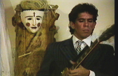

|
Video-Arte
Emilio Mendoza |
Las Tragedias Negras
"Venezuela es unos de los más grandes productores de petróleo del mundo
y nos hemos enriquecido por cien años contaminando al mundo entero y causando terribles accidentes:
Como venezolanos debemos todos ser ecológicos, esa es nuestra obligación de nacimiento con la Tierra." EM
"Venezuela es unos de los más grandes productores de petróleo del mundo
y nos hemos enriquecido por cien años contaminando al mundo entero y causando terribles accidentes:
Como venezolanos debemos todos ser ecológicos, esa es nuestra obligación de nacimiento con la Tierra." EM
Venezuela es un país sin memoria, olvidamos todo lo bueno y todo lo malo, vivimos el presente inconsecuente. Con el poder del arte, hacemos que ciertas tragedias de la industria del petróleo, devastadoras en vidas humanas, daños ecológicos y materiales que pasarían al olvido como objetos del consumo diario de noticias, se mantengan en memoria y nos hagan reflexionar, como seres conscientes en un bello y privilegiado país, que lo estamos destruyendo.
Estas Tragedias Negras continúan, sin enterarnos de muchas, como en la misma planta de Tacoa en el 2013. En el 2012 una explosión similar pero más grande, sucedió en la refinería de Amuay, edo. Falcón, y un año después, por presión de los medios de oposición se informó que la causa del desastre petrolero más grande de la historia había sido por un sabotaje de la oposición. Otra tragedia reciente en la refinería de El Palito pasó desapercibida, al estar el país saturado y hundido entre otras muchas malas noticias.
• Tragedia de Tacoa, diciembre, 1982, y octubre, 2013 - Noticias y fotos
• Tragedia de Amuay, agosto, 2012 - Noticias y fotos
• Incendio en El Palito, noviembre 10, 2013 - Noticias y fotos
• Tragedia del río Guarapiche, febrero, 2012 - Noticias y fotos
GUARAPICHE BLUES (2020)

Este video se culminó en febrero, 2020, sobre la tragedia en agua dulce con el derrame de petróleo sobre el río Guarapiche en el estado Monagas, dejando a su capital Maturín sin agua potable por 55 días. En homenaje a María Rivas, quien canta la pieza, el video salió al público en julio, 2020, cuando suceden dos derrames horribles en los estados Falcón y Anzoátegui, así como el de la isla Mauritio, África.
Videos realizados con el director alemán
Benno Richard Mauler Lair
Etnocidio expone musicalmente la opresión de una cultura y su gente por un agresor. Los videos utilizaron tomas reales de la localidad del accidente ocurrido en 1982, en la planta termo-eléctrica en Tacoa, edo. Vargas, donde murieron más de 200 personas, entre ellas bomberos y familias enteras, por las explosiones de enormes tanques de combustible que sorprendieron a las casas y a las brigadas de rescate con llamaradas volcánicas, quemándolos en el acto. La impunidad e indiferencia frente a tal desastre aún no han sido explicadas, sin causas ni culpables, efecto recurrente en nuestro país, donde la pobreza coexiste en contraste con los altos ejecutivos políticos y petroleros, champaña en mano, jugando al olvido.
El fotógrafo Benno Mauler llega a Venezuela con la compañía de teatro de Lindsay Kemp para el Festival Internacional de Teatro, 1983. Conoce a Mendoza a través de una amiga común, Eva Waldtschütz, y se apasiona con la ODILA, la Orquesta de Instrumentos Latinoamericanos que dirigía Mendoza en esos años. Le encanta Venezuela, su gente y naturaleza, se interesa en sus problemas y realiza un levantamiento fotográfico extraordinario, aún sin editar. Después de algunos viajes juntos por el país y reconociendo el nivel artístico visual de este nuevo amigo, además de su locura y buena onda, Emilio Mendoza organiza la producción de grabaciones de videos en diferentes localidades con personal de la ODILA como actores, y equipo técnico de INIDEF (ahora Casa de la Diversidad Cultural, Caracas), así como la compañía de danza Coreoarte con Noris Ugueto, directora y el gran coreógrafo/bailarín, Carlos Orta.
Los videos, originalmente en U-Matic 3/4", fueron digitalizados gentilmente en el ZKM - Zentrum für Kunst und Medien, Karlsruhe, Alemania, y se encuentran en sus archivos bajo los códigos incluidos bajo sus títulos.
ALOHA TACOA (1985)

STRIKE THE BALANCE (1988)
(Código ZKM: 2008000365_0000_lair_richard_strike-the-balance_venezuela_1988_umatic.mov)

ASCUAS (1984)
(Código ZKM: 2008000366_0000_laira_veno_ascuas_NTSC_Umatic.mov)